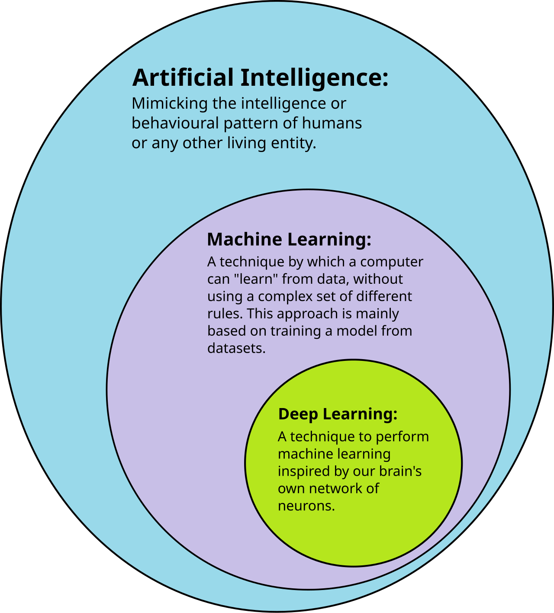
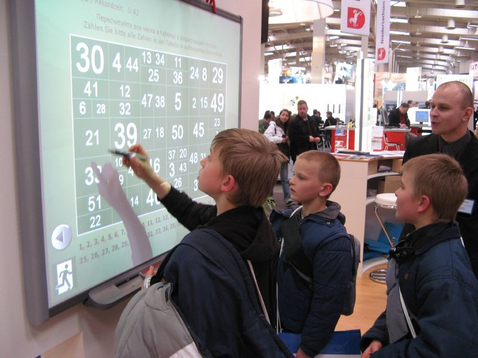

AI IN EDUCATION

🤖
교사 연수 워크숍
인공지능의 이해와
교육적 활용
AI 시대, 교실의 변화를 이끄는 교사
교원 직무연수
·
목표
🎯 연수 목표 및 일정
- AI의 기본 개념과 작동 원리를 이해하고 교육적 맥락에서 설명할 수 있다
- 생성형 AI 도구를 수업에 활용하는 방법을 실습한다
- AI 윤리와 저작권 이슈를 파악한다
- AI 기반 수업 자료를 직접 제작하여 현장에 적용할 수 있다
정의
🧠 AI란 무엇인가?
Artificial Intelligence
인간의 학습, 추론, 인지, 판단 능력을 컴퓨터 시스템으로 구현한 기술. 데이터에서 패턴을 학습하고, 이를 바탕으로 예측과 의사결정을 수행합니다.
AI는 약한 AI(특정 작업 수행)와 강한 AI(범용 지능)로 구분됩니다. 현재 우리가 사용하는 모든 AI는 약한 AI에 해당합니다.
역사
📅 AI의 발전 역사
AI 탄생
다트머스 회의에서 'AI' 용어 최초 사용
딥 블루
IBM 딥 블루가 체스 세계 챔피언을 이김
알파고
구글 딥마인드의 바둑 AI가 이세돌 9단에 승리
생성형 AI
ChatGPT, Claude 등 대화형 AI 대중화
비교
⚖ 머신러닝과 딥러닝의 차이
| 구분 | 머신러닝 (ML) | 딥러닝 (DL) |
|---|---|---|
| 데이터량 | 소~중규모 데이터로도 학습 가능 | 대규모 데이터 필수 |
| 특성 추출 | 사람이 직접 특성을 설계 | 스스로 특성을 학습 |
| 구조 | 결정트리, SVM, 회귀분석 등 | 인공신경망(CNN, RNN, Transformer) |
| 활용 | 스팸 필터, 추천 시스템 | 이미지 인식, 자연어 처리, 생성 AI |
생성형 AI
💬 생성형 AI: ChatGPT와 Claude

🤖AI 다이어그램
교육에서의 활용
- 학생 맞춤형 학습 자료 생성
- 수업 지도안 및 평가 문항 작성 보조
- 학생 질문에 대한 즉각적 피드백 제공
- 다국어 학습 자료 번역 및 변환
- 창의적 글쓰기 및 토론 주제 생성
활용 사례
🏫 교실에서의 AI 활용 사례
📝
수업 자료 생성
AI로 학년별 맞춤 학습지, 퀴즈, 시험 문항을 빠르게 제작
🎨
창의 수업
AI 이미지 생성, 음악 작곡 등을 활용한 융합 예술 수업
📊
학습 분석
학생별 학습 패턴 분석 및 개별화 학습 경로 설계
🌐
언어 학습
AI 대화 파트너를 활용한 외국어 회화 연습
수업 설계
📐 AI 활용 수업 설계 방법
4단계 수업 설계 프레임워크
-
01
목표 설정
교육과정 성취기준과 AI 활용 목적을 명확히 연결 -
02
도구 선택
수업 목표에 적합한 AI 도구를 선정하고 사전 테스트 -
03
활동 설계
AI는 보조 도구로, 학생의 사고력이 중심이 되도록 구성 -
04
성찰/평가
AI 결과물에 대한 비판적 검토와 학습 성찰 포함
윤리
⚖ AI 윤리와 저작권
- AI 생성물의 저작권은 아직 법적으로 명확하지 않으며, 교육 현장에서 주의가 필요합니다
- 학생 개인정보를 AI 서비스에 입력하지 않도록 지도해야 합니다
- AI의 편향성(Bias)을 인식하고 비판적으로 결과를 검토하는 습관이 중요합니다
- AI는 도구일 뿐, 최종 판단과 책임은 교사와 학습자에게 있음을 강조합니다
도구 비교
🔧 주요 AI 도구 비교
| 도구 | 강점 | 교육 활용 |
|---|---|---|
| ChatGPT | 범용 대화, 코드 생성 | 글쓰기 보조, 토론 상대 |
| Claude | 긴 문서 분석, 안전성 | 자료 요약, 수업 설계 |
| Gemini | 멀티모달, 검색 연동 | 이미지 분석, 연구 보조 |
| Canva AI | 디자인 자동화 | 프레젠테이션, 포스터 제작 |
실습
💻 실습: AI로 수업 자료 만들기

💻워크숍 실습
실습 과제
- 담당 과목의 단원 1개를 선택합니다
- AI 도구로 학습 활동지를 생성합니다
- 생성 결과를 검토하고 수정합니다
- 동료 교사와 결과물을 공유하고 피드백합니다
실습 시간: 30분 | 개인 또는 2인 1조
마무리
🎓
Q&A 및 마무리
AI는 교사를 대체하는 것이 아니라, 교사의 전문성을 확장하는 도구입니다
오늘의 핵심
- AI의 기본 원리를 이해하고 교육적 활용 방안을 탐색했습니다
- 윤리적 사용과 비판적 검토의 중요성을 확인했습니다
- 실습을 통해 AI 도구 활용 역량을 키웠습니다